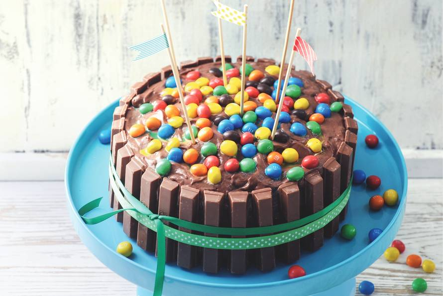
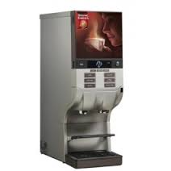

In deze opdracht moest er een klikbaar prototype ontworpen worden voor een fictief bedrijf. Dit fictief bedrijf bood een omgeving aan waar mensen hun eigen taarten konden aanbieden. In deze opdracht stonden verschillende buttons centraal. Er is dan ook geprobeerd om zoveel mogelijk verschillende buttons te gebruiken.

In deze laatste groepsopdracht werd het loonstrookje onder handen genomen. Loonstrookjes zijn over het algemeen erg onoverzichtelijk. Om het loonstrookje overzichterlijk te maken is ervoor gekozen om het loonstrookje in categorieën op te delen. In deze opdracht voerde ik de taak van grafisch ontwerper uit.